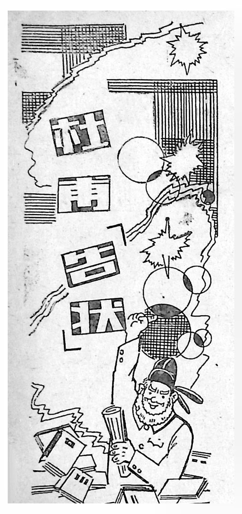

佚名 《人事》1990年第1期（总第52期），第38页
杜甫告状（题图）
Du Fu Files a Complaint (title drawing)
- Text in the drawing
- 杜甫告状
Du Fu Files a Complaint - Passage illustrated
老杜呈上状纸，院长看毕，摇头说：“胖游人之行为属道德范畴，是教育性质的问题，请你找精神文明办公室解决为好。我给你签个字，盖个公章介绍过去吧！”
Old Du handed up his written complaint. The court president read it and shook his head: “The fat visitor's conduct is a matter of morals, a question for education. You'd better take it to the Spiritual Civilization Office. I'll sign it and stamp it with the official seal to refer you there!”From the story 杜甫告状 (“Du Fu Files a Complaint”) by Zhao Xianhe, on the same page. 赵显和《杜甫告状》，同页
- Description
- Title drawing for the story: a grinning, bearded Du Fu in a scholar's cap clutches his rolled-up complaint amid swirling lettering, starbursts and toppling buildings.
- Note
- In the story the Tang poet Du Fu, insulted at his own memorial hall by a fat cadre in a Mao suit, takes his written complaint to the court, the spiritual civilization office, the propaganda department, the cultural relics bureau, the discipline commission and the supervision bureau — each sends him on to the next.
- Artist
- Unattributed 佚名
- Published in
- 《人事》1990年第1期（总第52期）, p. 38
- Themes
- Bureaucratism · Passing the buck · Paperwork and documents · Story illustrations

Cite
Unattributed, “杜甫告状（题图）” [Du Fu Files a Complaint (title drawing)], Renshi (Personnel) 《人事》, 1990, no. 1, p. 38.